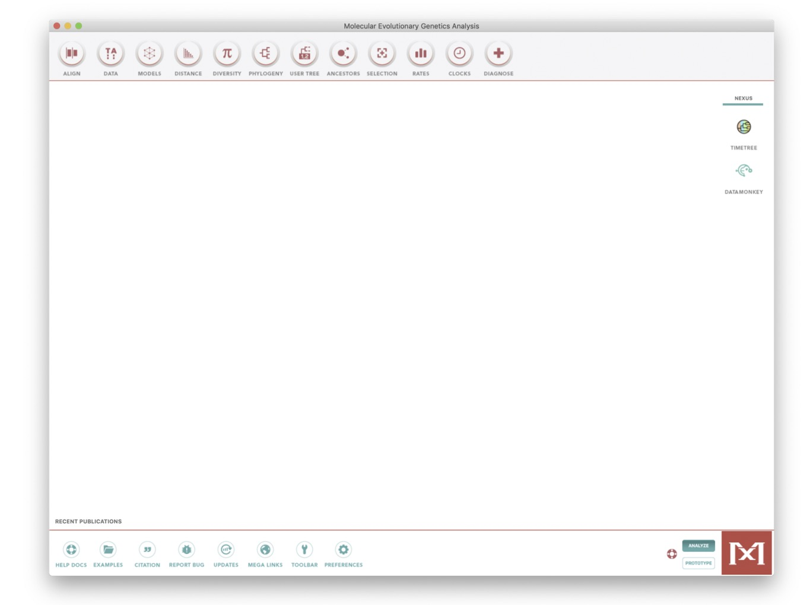
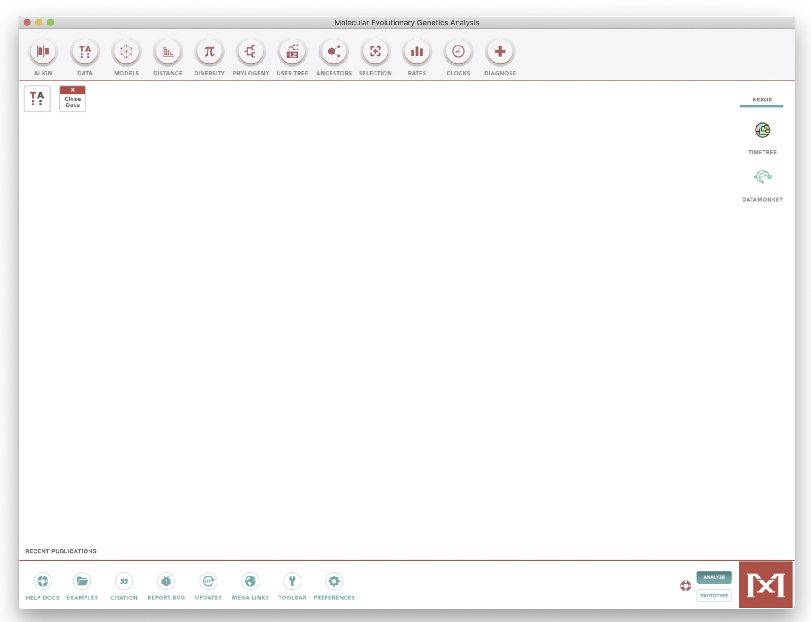
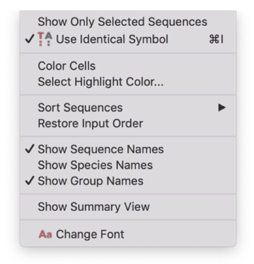
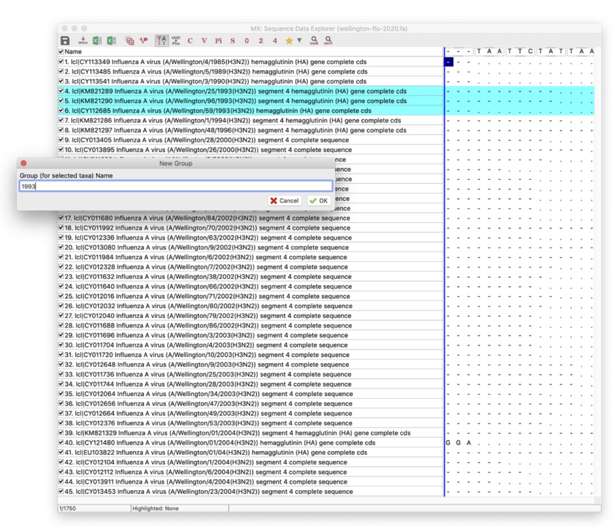
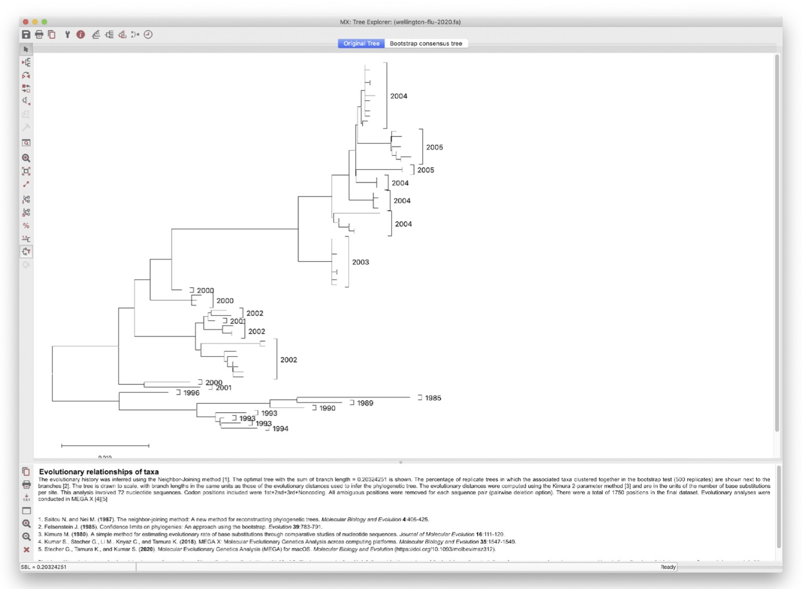
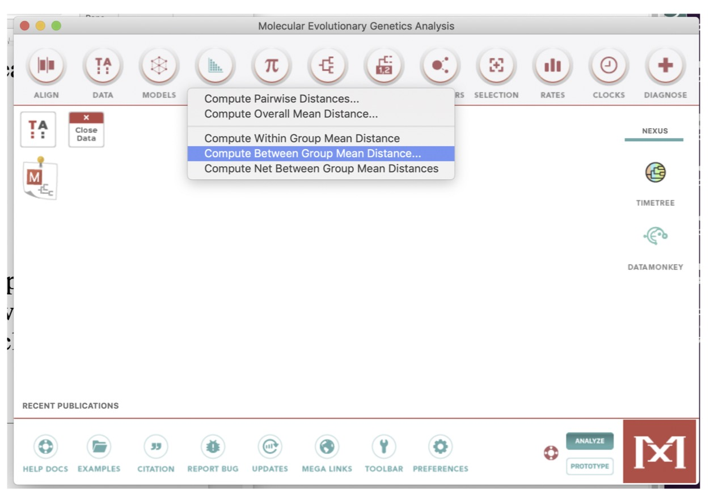
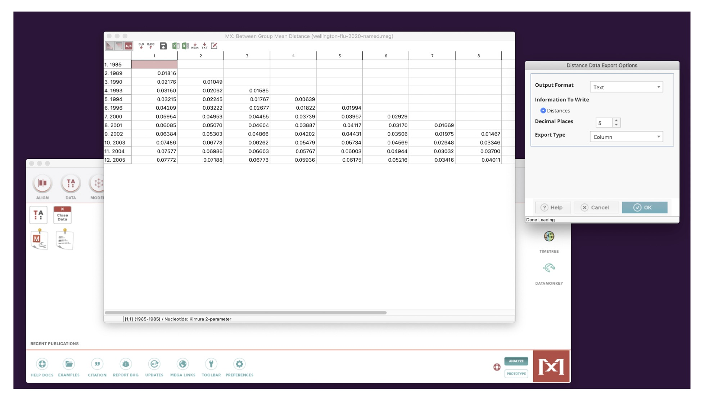
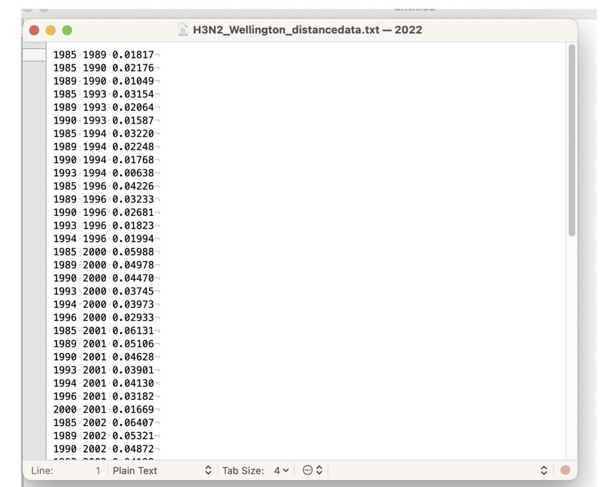

#BIO00056I Influenza Virus Practical ----
# SET UP ----
#set your working directory
#Your working directory will be different!
setwd("~/path/to/your/files/")
#You can use the Session menu to set this with:
#Session menu > Set Working Directory > Choose Directory
#then select the directory where your files are.
#load the tidyverse
library(tidyverse)BIO00056I
Workshop 5: Phylogenies & Molecular Clock
Important
We do not advise doing this workshop on a Mac since Mega software does not work very well on the Mac OS. It is best to use the University PCs which have the software already installed.
1 Learning objectives
The aim of this practical is to learn to visualise and interpret the data using phylogenetic analyses. You will see that we can extract a lot of information about evolutionary processes and populations from a phylogeny.
By the end of this workshop, you should be able to:
- Build phylogenetic trees using using MEGA software
- Infer evolutionary relationships based on phylogeny
- Correlate molecular evolutionary changes with time using R
Glossary
Technical definitions for this workshop.
molecular clock: The observation that mutations accumulate at a roughly constant rate over time.
node (of a phylogenetic tree): A point where branches split, representing either a common ancestor (internal node) or a modern species (terminal node).
branch (of a phylogenetic tree): A line connecting nodes, representing an evolutionary lineage. Branch length indicates the amount of evolutionary change. Due to the molecular clock hypothesis, branch lengths can be proportional to time.
mutation rate: The frequency at which genetic changes occur in DNA over time, typically measured as substitutions per site per year.
purifying selection: Natural selection that removes harmful mutations from a population, acting to preserve functional DNA sequences.
2 Introduction
2.1 Phylogenetic trees and the molecular clock
Much of what we can infer from phylogenies uses the model of the ‘molecular clock’. This is the observation that there tends to be a uniform, ‘clock-like’ rate of genetic change per year both within and between species. The rate of change differs between very different species and between genes.
Rates of change between species differ because:
- small organisms (like viruses and bacteria) have short generation times
- small organisms have high mutation rates
Rates of change between genes within a genome differ because the amount of purifying selection acting on a gene differs.
You can refresh your knowledge of Phylogenetic trees and the molecular clock from these two recordings:
2.2 The molecular clock and the real world
Evolutionary thinking can also help us to understand disease. For example, the global pandemic of the coronavirus SARS-Cov2 (which causes COVID-19 disease) is an RNA virus. As with all viruses, SARS-Cov2 is constantly undergoing evolutionary change.
The initial outbreak of the SARS-Cov2 virus in Wuhan China, was dated with amazing accuracy (to the month) to August 2019 using a time tree. Being able to tell when outbreaks occur, as well as where, can be a very powerful tool as it can supplement what we can see from epidemiology. Analysis of DNA sequences is the only way we can obtain this information.
3 Exercises
In this workshop, we will study the evolution of the influenza virus. Influenza is an RNA virus that causes seasonal epidemics and occasional pandemics in humans. The influenza virus evolves very rapidly, which is why we need a new flu vaccine every year.
3.1 Obtaining data
There is a wealth of freely available sequence data available on GenBank. The downside is that most data is often poorly annotated and misses the critical associated information (e.g. date and place of collection). Here we will take advantage of the influenza virus resource database, which is relatively well curated.
We have downloaded all the human full-length H3N2 type sequences from the hemagglutinin (HA) sequences from Wellington (New Zealand). Hemagglutinin (HA) a glycoprotein gene that is on the influenza virus surface.
You can download the file H3N2_wellington.fasta here. This file has HA sequences from 72 influenza strains from 1985 to 2005. Sequences are already aligned, and sorted by date.
3.2 Visualising and analysing data
3.3 Starting analysis in Mega
We will use the Mega software for all analyses. It should be installed on your computers. If you would like to use your own computer, you can download it from the mega website. Use the latest version, Mega 11.
Important
Mega software does not work very well on the Mac OS.
Once you start Mega, you will see the following window. Be careful here, because Mega has multiple windows.

Next, load the H3N2_Wellington_seq.fa file through the Data > Open a File/Session Menu (Ctrl+O).
Then click:
Analyze(not align)- OK to
Nucleotide Sequences - Yes to
Protein-coding nucleotide sequence data - OK to
Standard Genetic Code.
You should see the window shown below

3.4 Group the strains by year.
Click on the TA window at top left to see the Sequence Data Explorer.
You can scroll around and resize this window. This data file comprises 72 complete HA sequences from influenza H3N2 sampled between 1985 to 2005.
Now let’s group the strains by year. This will be fairly easy because we sorted the data by year before we downloaded it. Samples have the year embedded in the name.
For example:
- this one is from 1985:
Influenza A virus (A/Wellington/4/1985(H3N2)) - and this from 2004:
Influenza A virus (A/Wellington/34/2004(H3N2))
First, go to the Display menu, and click on Show Group Names. This will help you to keep track of what you’ve done.

To group strains, select one or more strains from a year by clicking on the name of the first strain in the grey part of the window, and shift+click to select the last one, as below:
Then, go to the Edit menu, and click on Create Group from Selection. A new group will appear in the left-hand panel. Rename it to the year of sampling (e.g. 1985).
Repeat this for all years from 1985 to 2005.

3.5 Building a phylogenetic tree
As you will have seen, there are a large number of possible options for analysis in MEGA. However, we will build one tree along a single, robust methodology.
Go to the Phylogeny menu on the main menu:
Phylogeny -> Construct/Test Neighbor-Joining
Choose these options:
- For Model/Method, choose the
Kimura 2-parameter modelof evolution - For Test of Phylogeny, choose
Bootstrap methodand select 1000 bootstraps. - Leave all other options as default
Then click OK.
Bootstraps represent statistical support for individual clades, values in excess of 70-80% are considered well supported.
After less than a minute, you will get a phylogenetic tree, a new Mega window.
It does not look very informative, so change the presentation of the tree using the menus on the left:
- First, deselect
Taxon Names - Under Layout, select
Auto-size tree - Define a root. The branch leading to the sequence from 1985 makes a biologically reasonable root. To define a root, simply right click with your mouse on the chosen branch and select
Place root. - You may also need to click toggle
Scalingof the tree in theLayoutmenu.
You should see a tree like the one shown below.

3.5.1 Understanding the tree
What do you notice about the clustering of years on this phylogeny?
- In particular, look at the branch lengths (ie: genetic distance) from the root of the tree, to the tips.
- This indicates how many mutations have occurred since the common ancestor.
3.6 Measuring molecular change over time
An important question in phylogenetics is whether the accumulation of mutation (substitution rate) is constant over time. One way to test for this would be to count the number of mutations from the root to each tip. Estimating the most likely root is not completely straightforward and counting the number of mutations from root to tip would require some scripting well beyond the scope of this practical. However, we can test whether genetic distances increase linearly with time.
To address the issue of linearity between substitution rates and time, we can first compute genetic distances between the sequences grouped by years. To do this:
- Go to the
Distancemenu (at the top of the main Mega window) - Click
Compute Between Group Mean Distance(see image below) - Keep the
Kimura 2 parameter model - Click
OK

You should see the matrix shown below.

Next, export this data to a file:
- In the matrix window, click on the
Filemenu - Then
Export/Print Distances - Output format:
text - Export Type:
column
You should see a window something like the image below.

Finally edit and save this file: - Remove all the text above Species1 Species2 Distance - Remove the text below the data table, “Table. Estimates of Evolutionary Divergence over Sequence …” etc
- Edit the
Species1 Species2 Distancetext todate1 date2 Distance - Choose
File > Save As - Name the file
H3N2_wellington.distances.txt
You can also obtain a copy of this file here.
3.7 Analysis of genetic change with time
The remainder of this part of the workshop will use R Studio, so start RStudio now.
All the commands you’ll need are in the R Script BIO00056I-influenza-practical-2024.R, which is available to download here.
Or you can create your own script, and copy the commands from here as we go along.
3.7.1 Set up the script
First, set up your script:
3.7.2 Loading and plotting the data
Then load the Wellington data, and make a plot
# WELLINGTON DATA ----
#open your distances file, into a data frame:
#Your distance file may have a different name
flu <- as_tibble(read.table("H3N2_wellington.distances.txt",h=T))
#calculate how many years between two groups
flu$time.passed <- flu$date2 - flu$date1
#see if distance increases with time, as mutations accumulate
#make the plot
flu_plot<-ggplot(flu,aes(x=time.passed, y= Distance))+
geom_point()+
xlab("time distance between groups (years)")+
ylab("genetic distance between groups")+
theme_classic()
#view the plot
flu_plot
#now add a line of best fit:
flu_plot +
geom_smooth(method="lm")
#examine whether the correlation is statistically significant:
cor.test(flu$time.passed,flu$Distance)3.7.3 Interpret the data
You should see a good correlation between genetic distance and time distance.
- What causes this? (which process of evolution)
- Why is there such a strong correlation?
We can observe this relationship over just a few decades? - What does this tell us about the rate of change?
3.8 Optional: Does the influenza virus spread across the Tasman Sea?
Another use of virus genetic data is to determine how fast pathogens spread. Here, we’ll show an example, where we examine whether people in New Zealand share the same strains as their neighbors in Australia across the Tasman Sea.
We have downloaded and aligned 118 strains from Australia and New Zealand. You can download the file H3N2_tasman.fasta here. These sequences are already aligned
Then open MEGA, selecting Analyse, and
- Select the Distance menu, and Compute Pairwise Distances.
- You will see a matrix of distances
- In this window, select the
Filemenu, and:- Export/Print Distances
- Output format: CSV
- Export type: Column
As before remove all the text above and below the data:
Above:
- Title: fasta file
- Description:
Below:
- Table. Estimates of Evolutionary Divergence between Sequences
- The number of base substitutions per site from between sequences are shown.
Then edit the header line to be: region1 region2 Distance, ensuring there is a space character between each column names.
Finally, save the file as H3N2_tasman.distances.csv.
You can also obtain a copy of the H3N2_tasman.distances.csv file here.
Then examine the between-country differences and compare these to within-country differences, using the code in the R script, as below:
# TASMAN SEA DATA ----
#open the Tasman genetic distance data
tas <- read_csv("H3N2_tasman.distances.csv")
#add country1 and country2 columns
tas$country1 <- NA
tas$country2 <- NA
#label the countries using grep
tas[grep("NZ", tas$region1),]$country1 = "NZ"
tas[grep("AUS", tas$region1),]$country1 = "AUS"
tas[grep("NZ", tas$region2),]$country2 = "NZ"
tas[grep("AUS", tas$region2),]$country2 = "AUS"
#add a comparison.type column
tas$comparison.type <- NA
#mark the within country data
tas[which(tas$region1 == tas$region2),]$comparison.type <- 'within country'
#mark the between country data
tas[which(tas$region1 != tas$region2),]$comparison.type <- 'between country'Now we make some plots:
#plot this data
#to examine whether genetic distances differ
#within a country vs between countries
ggplot(tas,aes(y=Distance,x=comparison.type))+
geom_boxplot()+
xlab("genetic distance comparison")+
ylab("genetic distance")
#test whether there is any significant difference
#between the Distance within vs between countries
wilcox.test(Distance ~ comparison.type, data = tas)
#Now go back to the exercises, to think about this data.
# END ---3.9 Interpreting the Tasman sea data
- Do genetic distances differ very much within vs between countries in the box plot?
- What would you expect to see if there was one lineage of influenza viruses circulating in Australia and another lineage circulating only in New Zealand?
- What would you expect to see if influenza viruses were spread freely between Australia and New Zealand?
4 Summary: what we have learned
- Phylogenetic trees can be used to visualise much more than merely evolutionary relationships between species
- We used the phylogenetic tree to examine whether mutation accumulation in the influenza virus is clock-like
- There seems to be a considerable amounts of evolutionary change occurring within the influenza viruses over just a few decades
- This change is approximately clock-like, with a roughly constant rate of mutation accumulation over time
- We can answer other questions about the spread of viruses using genetic data, such as whether influenza viruses spread freely between one place (Australia) and another (New Zealand)
5 Exam style questions
5.1 Question 1 (10 points)
A plant pathogenic virus has been spreading across farms in the United Kingdom. You have collected viral DNA sequences from infected plants at different locations over the past 10 years.
Define what the molecular clock hypothesis is. (2 points)
You create a phylogenetic tree from your viral sequences. On this tree, sequences from 2015 are near the root, and sequences from 2025 are at the tips. Explain what the branch lengths on this tree represent. (2 points)
You plot genetic distance against time (in years) between virus samples and observe a positive linear relationship. State which evolutionary process causes mutations to accumulate over time. (2 points)
Suggest ONE piece of information that phylogenetic analysis could provide to help farmers control the spread of this virus. (2 points)
To make your analysis more reliable, identify TWO pieces of metadata you would need to collect along with each viral sequence sample. (2 points)
5.2 Question 2 (10 points)
This practical examined molecular evolution in the influenza virus using phylogenetic methods.
RNA viruses like influenza are particularly good for studying the molecular clock over short time periods. Give TWO reasons why RNA viruses accumulate mutations rapidly. (4 points)
In the Wellington influenza data, you found that genetic distance increased with time between sample groups. Describe the pattern you observed in the plot and state whether this supports the molecular clock hypothesis. (3 points)
Define what purifying selection is. (1 point)
A gene under strong purifying selection will have fewer mutations accumulate over time compared to a gene under weak purifying selection. Explain why this occurs. (2 points)
6 Further reading
These two articles will be useful for those that want to extend their knowledge.
- Baum (2005): The Tree-Thinking Challenge
- Shao (2017): Evolution of Influenza A Virus by Mutation and Re-Assortment
Acknowledgement
This workshop was designed and shared by François Balloux.